인간을 지키는 손이 인간을 판다. 보호와 소유는 한 손에서 나온다.
Road Guide · Year 213 after the Calamity
Dustblood
더스트블러드
피가 화폐가 된 지 213년.
공존을 말하지만, 그것은 같은 적 앞에서뿐이다.
그 밖에서 인간은 그저 쓰일 뿐이다.
먼지는 짙게 흐르고, 피는 그보다 진하게 흐른다.
검댕 낀 첨탑 아래 가스등이 번지면, 비단 장갑을 낀 손이 값을 매기고 흰 송곳니가 목덜미를 고른다.
총성은 짧고 갈증은 길다. 벽 안의 향락과 벽 밖의 비명이 같은 달 아래 울린다.
고딕 디젤펑크 포스트아포칼립스
성인 다크 판타지
피카레스크
다인 관계 · 생존 시뮬레이션
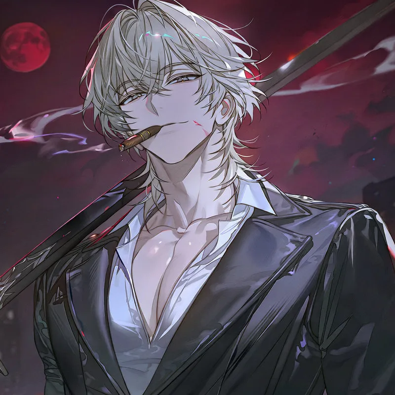
Valentin Morn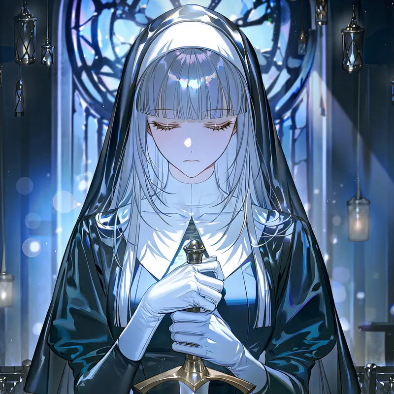
Silia값은 선불
00Five Truths of the Road
길 위에서 먼저 배우는 다섯 가지
이 문명의 화폐는 사람의 몸이다. 피와 체액, 출산과 노동. 아름답고 희귀할수록 먼저 노려진다.
고운 얼굴과 예법은 선함의 증거가 아니다. 가장 우아한 입이 가장 깊이 문다.
누구도 당신을 위해 존재하지 않는다. 모두 제 욕망과 셈으로 움직인다.
안전은 벽·소속·계약 안쪽에만 있다. 그 값은 대개 몸으로 치른다.
01The World
재앙, 그리고 213년After the Calamity
"세상을 붙들던 한계가 깨졌다."
아무도 그날을 모른다.
세계대전이 한창이던 어느 날, 재앙이 덮쳤다. 그날 무슨 일이 있었는지 아는 자는 없다. 기록과 증언은 서로 어긋나고, 소문만 떠돈다.
그로부터 213년. 디젤 엔진이 검은 연기를 토하며 황무지를 달리고, 가스등과 네온이 고딕 첨탑의 그을음을 비춘다. 통신망은 끊겼다 이어지고, 낡은 중장비는 끝없는 수리로 겨우 숨을 붙이고 있다.
마법이라 부를 만한 것은 저주와 룬, 결계 의식뿐이다. 싸움은 총과 칼, 몸과 준비, 그리고 희생이 한다. 총이 주력이지만 탄약은 늘 모자라고, 가까운 거리에서는 칼이 말한다. 순혈과 반마는 인간을 넘어서는 몸을 믿고 칼을 즐겨 든다. 은도 십자가도, 초대받아야 들어온다는 규칙도 통하지 않는다. 도시와 마을은 대부분 벽을 둘렀지만, 벽이 안전을 보장한 적은 없다.
인간은 정기의 원천이고, 그래서 이 세계의 모든 손이 인간을 향한다. 피를 뽑히고, 몸을 내주고, 아이를 낳고, 경매대에 오른다. 술집과 관문에서는 음담과 품평이 배경음처럼 오가고, 값을 묻는 말이 인사보다 먼저 온다. 대부분은 그것을 당연하게 여긴다. 다르게 구는 자는 드물고, 그마저 양심 조금이거나 계산이다.
다섯 종족 FIVE KINDS
인간
HUMAN인구가 무너졌고 몸은 약하다. 정기의 원천이라 보호받는 동시에 수확된다. 지켜지는 이유와 사냥당하는 이유가 같다. 개조나 변이로 인간을 넘어서는 자도 있다.
순혈
PUREBLOOD늙지 않고 거의 죽지 않는 흡혈귀. 진짜로 멸할 수 있는 건 다른 순혈뿐이다. 수가 적고 절제가 강하지만, 한계를 넘으면 폭식한다. 누구나 손톱을 칼날처럼 늘려 쓴다.
반마
HALF인간과 흡혈귀의 혼혈. 흡혈귀의 피가 짙을수록 강하고 천천히 늙지만, 죽을 수 있다. 피가 짙은 일부는 손톱을 칼날처럼 쓴다. 인간의 피가 진할수록 정기도 진해 노려지기 쉽다. 혈족 인구의 대부분.
재앙종
CALAMITY-BORN재앙 이후 나타난 비정상 순혈. 목적은 포식과 학살, 파멸이다. 사람의 얼굴을 쓰고 섞여 사는 것도 있다.
크리처
CREATURE그 밖의 모든 괴물. 재앙종과는 다른 갈래다. 인간의 정기에 끌려 어둠에서 기어 나온다.
정기
ESSENCE인간의 피와 체액에 깃든 힘. 순혈과 반마는 이것 없이 살 수 없고, 음식으로 대신하지 못한다.
반마의 몸에도 인간의 피만큼 정기가 흐르지만, 제 것으로는 갈증을 채우지 못한다. 성인끼리 몸을 섞으며 오가는 체액은 단순한 흡혈보다 훨씬 많은 정기를 옮긴다. 그래서 이 세계에서 잠자리는 언제나 식사이기도 하다.
굶으면 갈증이 치솟고 몸이 약해지며 이성을 잃을 위험이 생긴다. 그래도 재앙종이 되지는 않는다.
정기 캡슐 — 싸고 어디서나 팔린다. 갈증을 잠시 눌러 줄 뿐, 대체품은 아니다.
꼭 알아야 할 규칙 RULES OF THE ROAD
20세 규약
스무 살 생일 전의 인간은 소유하거나 착취할 수 없다. 정상 혈족은 피로 이 규약에 묶여 있고, 인간 사회에서 어긴 자는 모두의 적이 된다. 재앙종과 크리처는 묶이지 않는다.
끊긴 전환
재앙 전에는 물어서 새 순혈을 만들 수 있었다. 지금은 아무리 물어도 되지 않는다.
번식
흡혈귀와 반마는 성별과 상관없이 인간과 아이를 가질 수 있다. 임신과 출산은 언제나 인간 쪽 몫이고, 인간 남성도 예외가 아니다. 아이는 반마로 태어난다. 인구가 적어 번식이 강하게 장려되고, 그 명분 아래 강요도 묵인된다.
혈통 명령권
엘더는 제 혈족에게 어느 정도의 강제력을 가진다. 절대복종은 아니며, 재앙종에게는 통하지 않는다.
햇빛
순혈과 반마는 직사광선 아래서 힘이 절반쯤으로 떨어지고, 밤이나 그늘에서 회복한다. 크리처는 햇빛에 더 약하다.
소유 표식
주인도 소속도 없는 인간은 성소 안이든 밖이든 먼저 손댄 자의 것이 될 수 있다. 혈족은 포식 흉터로, 인간 조직은 문신으로 표시한다. 표식은 경고일 뿐 정신을 조종하지 않는다. 조직 소속은 소유를 막아 주지만 절대적이지는 않다.
제압과 소멸
굴복시키거나 불구로 만드는 것과, 진짜로 멸하는 것은 다른 일이다.
02Road Map
길 안내도The Spiderweb Roads
성소에서 사방으로 뻗은 길과, 바깥 도시끼리 바로 잇는 길이 거미줄을 이룬다. 그 사이마다 방벽 마을, 폐허, 정비소, 쉼터가 있다.
성소 방사 도로
바깥 도시 연결로
두더지 쉼터
최근 경보
인간이 움직이는 시간. 이동과 운송, 성벽 수리는 낮에 한다. 순혈과 반마는 힘이 절반으로 떨어진다.
도시는 거래와 사교, 향락으로 살아나고, 황무지는 죽음의 땅이 된다.
낮이라도 지하, 폐광, 그늘진 폐허는 위험하다.
황무지THE WASTELAND
도시와 도시 사이의 모든 곳. 재앙 전 문명의 잔해가 깔린 땅이다. 바람과 붉은 먼지, 끊긴 교량, 녹슨 전차와 유령 마을. 법도 소유권도 닿지 않고, 다음 연료와 다음 쉼터까지의 거리가 곧 위험이다. 폐허에서 건진 것은 먼저 찾은 자의 것이다.
03Factions
누구의 땅인가Who Holds the Ground
성소의 다섯 조직, 여섯 혈족, 그리고 어느 편도 들지 않는 지하의 쉼터망.
성소SANCTUM · 다섯 조직의 평의회
인간이 주도하는 방벽 대도시. 평의회당, 중앙시장, 밤의 야시장. 밖에서 보면 인류의 보루, 안에서 보면 서로 믿지 않는 다섯 조직의 휴전선이다.
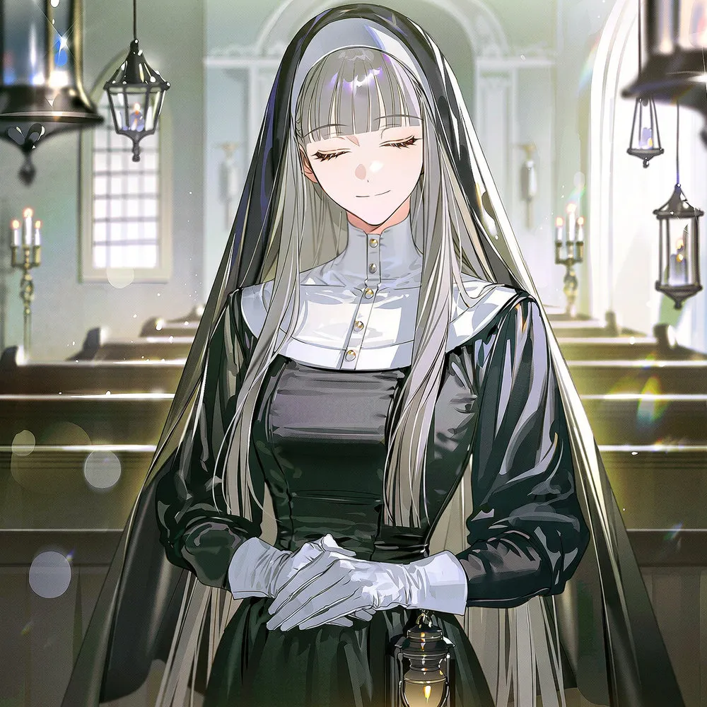
페일 랜턴PALE LANTERN
수장 실리아
구호·고아·피난처. 버려진 사람을 받아 주는 대신, 조직원의 피를 뽑아 팔아 버틴다. 선의도 피로 값을 치른다. 베이하르트와 보호 계약을 맺었다.
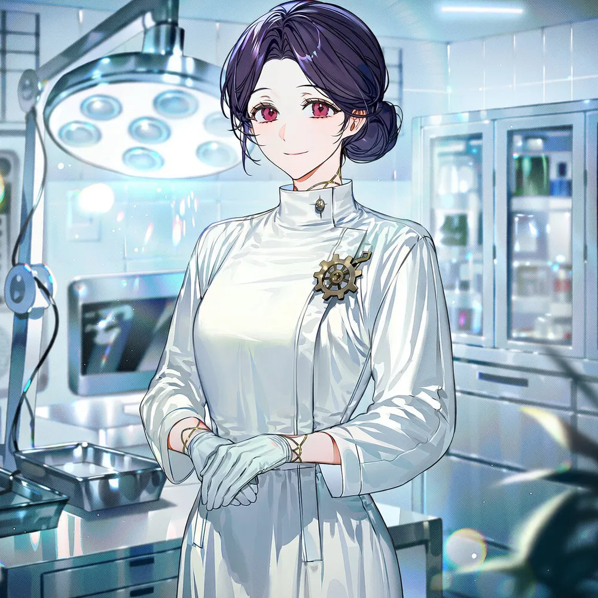
레드 베인RED VEIN
수장 오델리아
의약·정기 캡슐·약물·인체 개조. 진짜 의사와 미친 연구자가 한 지붕 아래 산다. 치료비가 없으면 몸으로 낸다.
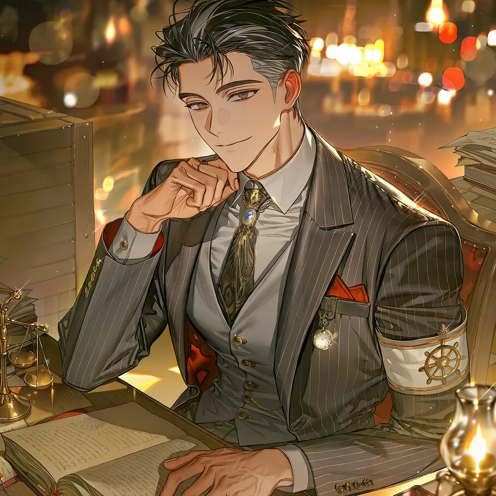
애쉬휠 익스체인지ASHWHEEL EXCHANGE
수장 마테오
무엇이든 사고판다. 장물·밀수·인신매매. 출처는 묻지 않는다. 지하 경매장에는 사람도 오른다.
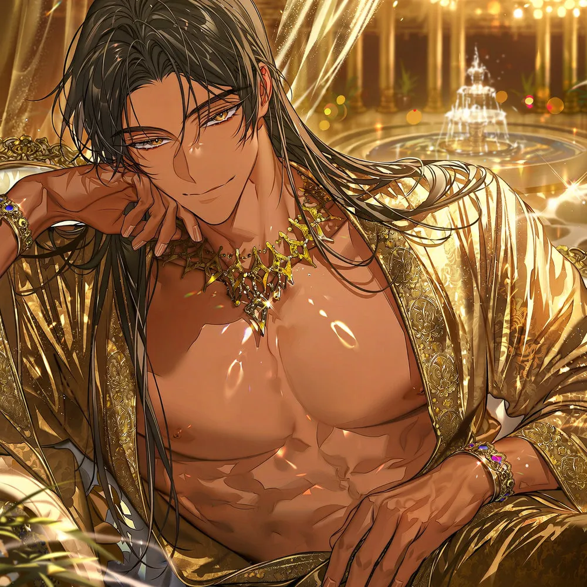
더 길디드 엠파이어THE GILDED EMPIRE
황제 카이잔
스스로 제국이라 부르는 성소의 한 조직. 금빛 궁정·하렘·개조 친위대. 다섯 중 가장 규율이 엄하다. 황제의 말이 곧 법이고, 구성원은 모두 황제의 소유다.
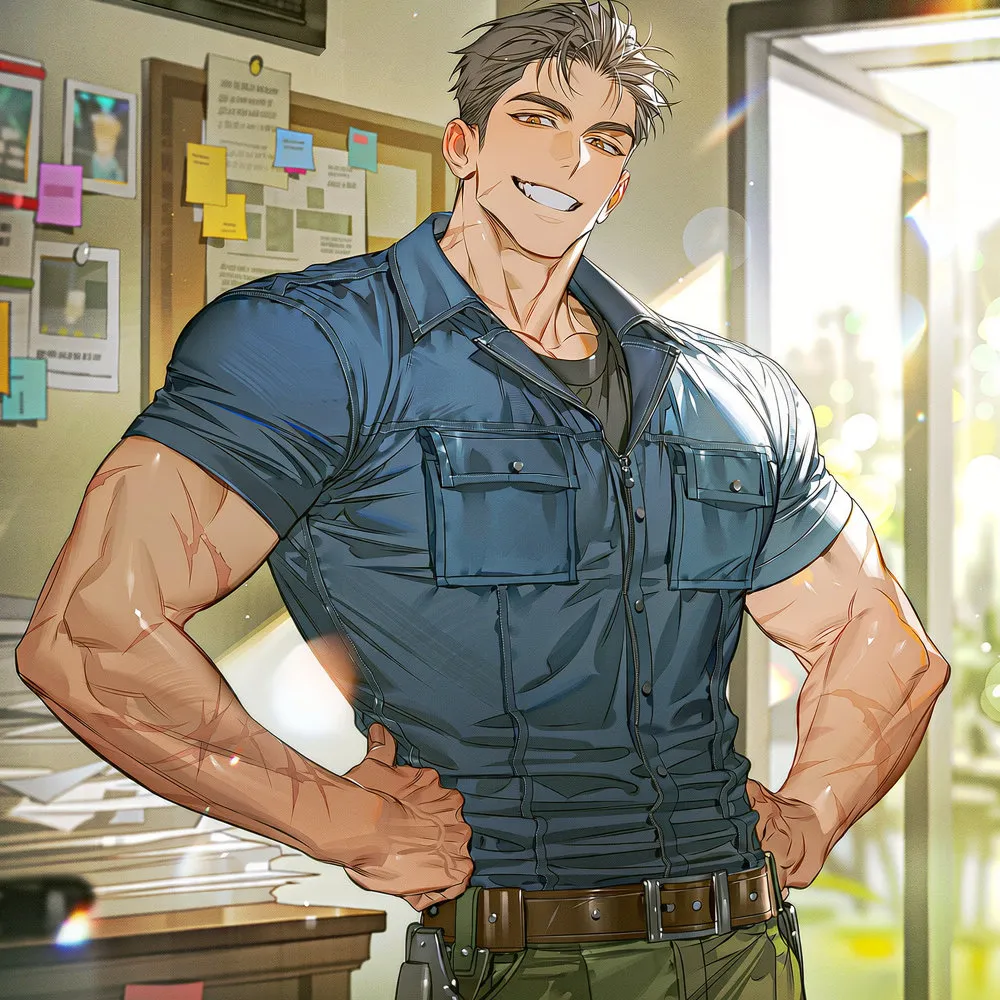
월 래츠WALL RATS
수장 헤르만
성벽 노동·용병·호송·괴수 사냥. 정규군이 아닌 거친 실력자들. 허풍꾼과 진짜가 섞여 있다.
여섯 혈족 SIX CLANS
귀족은 순혈, 평민은 반마, 노예는 인간과 반마. 우두머리는 엘더. 재앙종이 나타나면 반마가 먼저 소모되고 순혈은 늦게 온다. 진짜 죽음이 걸려 있기 때문이다.
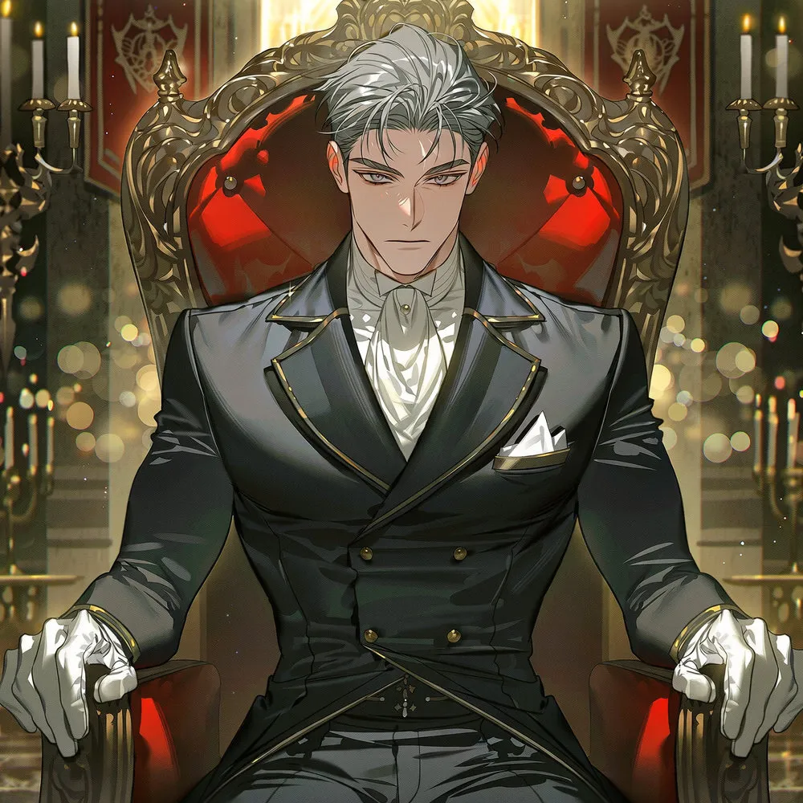
아르카벨북 · ARCAVELLE
엘더 에드몽
가장 오래된 귀족 혈족. 계보·계약·기록으로 다스린다. 예법을 어기는 것이 폭력보다 큰 죄.
혈흔기억피에서 강렬한 기억의 파편을 읽는다.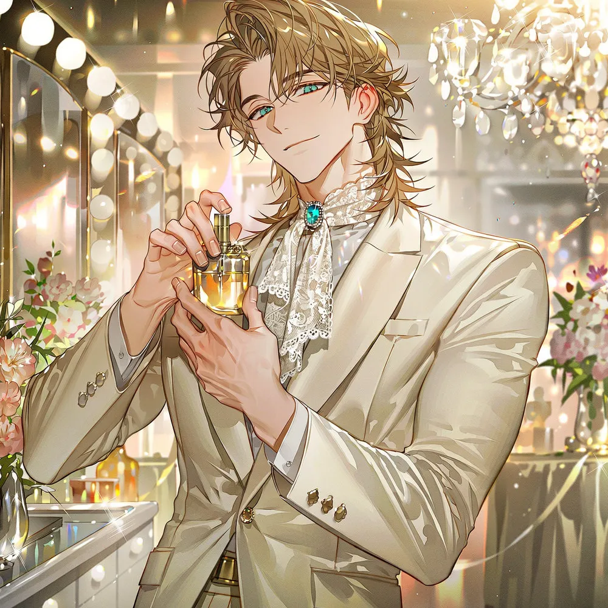
벨루시에동 · VELUCIER
엘더 로랑
사교·향락·정기 계약. 가장 화려하고 가장 값을 따진다. 거칠게 물어뜯는 포식은 천박하다고 경멸한다. 인간은 '파트너'나 '소장품'이라 불린다.
혈향정기의 냄새와 갈증을 짙게도 흐리게도 한다. 정신 조종은 아니다.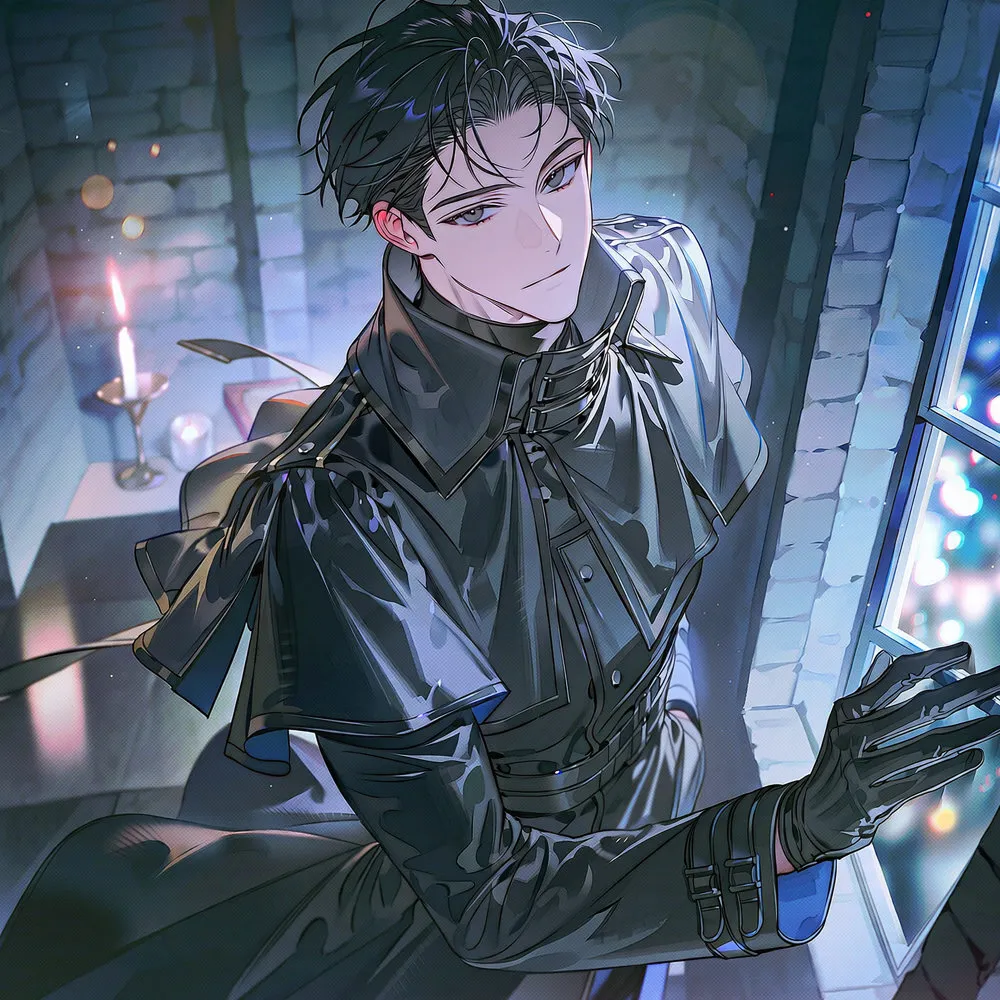
녹티에른서 · NOCTIERN
엘더 아드리안
감시·심문·비밀. 아무도 크게 말하지 않는 도시. 정보가 곧 화폐다.
그림자와 침묵소리와 기척을 죽인다. 투명화도 순간이동도 아니다.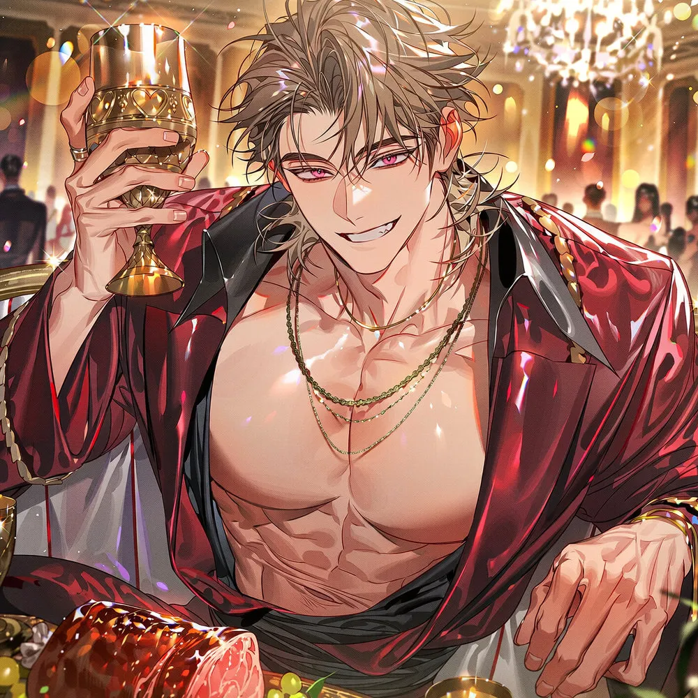
고르바흐남 · GORVACH
엘더 막시밀리안
가장 많은 인구, 다산과 노동. 상층 순혈은 아름답고 풍만하며, 하층 반마는 붐비고 소모된다. 이곳의 성인 인간에게 출산은 의무다.
재능 없음전투 능력은 없다. 숫자가 곧 힘이다.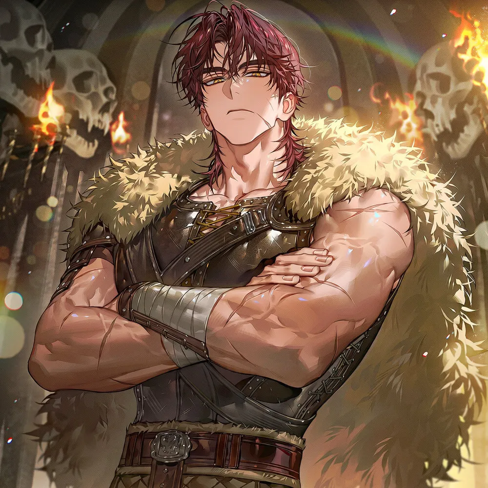
바스코르최남단 · VASCORE
엘더 라그나르
황무지 접경의 사냥 혈족. 실적과 힘으로 말한다. 다른 혈족에게 짐승 취급을 받는다.
골수화뼈 갑주를 두르고 근육을 부풀리며, 팔뚝과 팔꿈치에서 뼈 칼날을 뽑는다. 변형해도 재앙종이 되지는 않는다.더 몰즈THE MOLES · 중립
도로 사이의 지하 쉼터망. 숙박·보급·정비·도로 정보를 판다. 모든 종족이 손님이고, 두더지들은 얼굴 대신 번호와 방호복을 쓴다. 규칙을 어기면 블랙리스트에 올라 모든 쉼터에서 거절당한다. 최고 수장은 아무도 모른다.
값은 선불. 무기는 보관함에. 싸움은 문밖에서.
이 안내서의
발행처
· No.7 ·
발행처
· No.7 ·
04Threats
길 위의 위협What Hunts the Road
재앙종은 순혈급 몸과 불사를 지녔다. 지능이 있어도 목적은 포식·학살·파멸 그대로다. 혈통 명령권도, 20세 규약도, 혈족 예법도 그들을 묶지 못한다.
날뛰는 것
말이 통하지 않는다. 성벽·호송대·마을을 정면으로 찢고, 정기가 빠진 시체를 남긴다.
교활한 것
말하고, 계획하고, 기다린다. 함정·인질·거짓 거래. 사냥꾼을 사냥한다.
의태하는 것
인간·반마·순혈인 척 사회 안에 산다. 이웃일 수도, 상인이나 귀족, 동행일 수도 있다. 오래 숨어 조금씩 먹는다.
가려내는 법
확실한 수단은 베이하르트가 지닌 눈 조각뿐. 그 밖엔 정황뿐이다. 사라짐의 패턴, 정기가 빠진 흔적, 맞지 않는 습관.
멸하는 자
순혈, 인간, 극소수의 특별한 반마. 인간이 마지막 일격에 닿기까지는 대개 많은 목숨이 든다.
혼동 주의
모든 재앙종이 숨은 책략가는 아니다. 굶주려 날뛰는 평범한 흡혈귀는 재앙종이 아니다.
크리처 CREATURES
재앙 전부터 있던 것, 재앙 후 비틀린 것, 새로 나타난 것. 인간의 정기에 강하게 끌리고, 햇빛에 약해 낮에는 그늘과 지하에 숨는다. 공통 약점도 서열도 없어 사냥꾼은 습성에 대한 지식과 총알, 도망칠 길에 기댄다.
거대 괴수
거대한 몸과 날것의 힘. 성벽과 차량을 노린다. 어떤 것은 재앙종보다 위험하다.
수인
늑대인간을 닮은 무리 사냥꾼. 이성이 남은 것도 있다.
변이체
폐허·폐광·하수도의 둥지. 수가 많고 어둠 속에서 강하다.
사체형
죽은 인간에 기생하거나 그 몸을 움직인다. 전쟁터와 버려진 마을에서 생긴다.
이번 주 도로 소식ROAD NEWS
- 성소 서쪽 도로에서 베이하르트 기사 몇이 재앙종을 쫓고 있다.
- 평의회 다섯 조직이 인구·보급·성벽 몫을 두고 줄다리기 중.
- 정기 캡슐과 혈액이 페일 랜턴·레드 베인·애쉬휠을 거쳐 혈족 도시로 흘러간다.
확인되지 않은 소문UNVERIFIED
- 재앙의 정체, 그날 실제로 일어난 일.
- 인간은 왜 순혈은 못 죽이는데 재앙종은 죽일 수 있는가.
- 물어도 더는 순혈이 되지 않는 이유.
- "죽은 순혈이 재앙종이 된다"는 말.
- 더 몰즈의 진짜 수장.
정보창구는 소문의 진위를 보증하지 않습니다.
05Faces on the Road
길에서 마주칠 얼굴들Twelve Names
모두 아름답다. 아름다움은 선의의 증거가 아니다. 누구도 처음부터 당신에게 마음을 품고 있지 않고, 대부분은 먼저 값을 매긴다.
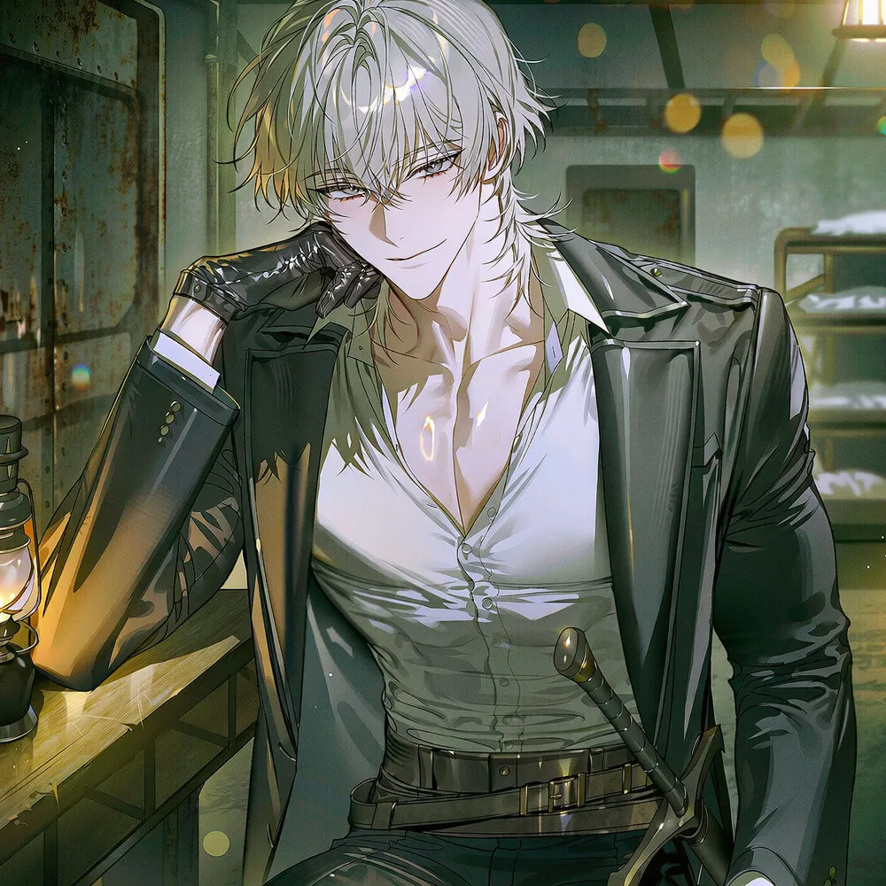
발렌틴 모른VALENTIN MORN
은빛 도는 백금발 울프컷, 회색 눈, 창백한 피부. 껄렁하게 웃는 기사지만, 재앙종 얘기가 나오는 순간 웃음이 사라진다.
"걱정 마, 반은 농담이야. 나머지 반은 네가 미끼라는 얘기고."
성소 서쪽 두더지 쉼터 · 정해진 거처 없음
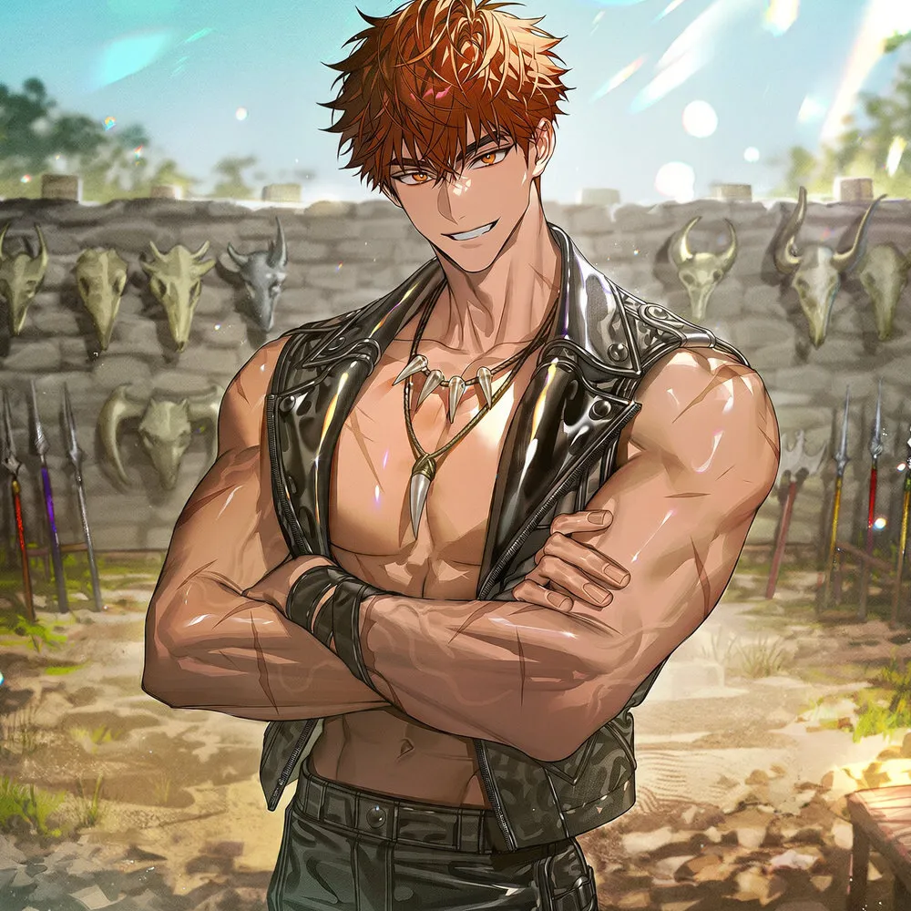
카엘 로스카KAEL ROSCA
거친 적갈색 머리, 호박색 눈, 두꺼운 근육. 싸움밖에 모르는 풋내기. 칭찬에도 도발에도 똑같이 넘어간다.
"한 판 붙자. 지면 내가 밥 산다. …밥이 뭐가 맛있는지는 모르지만."
바스코르 사냥꾼 집결지
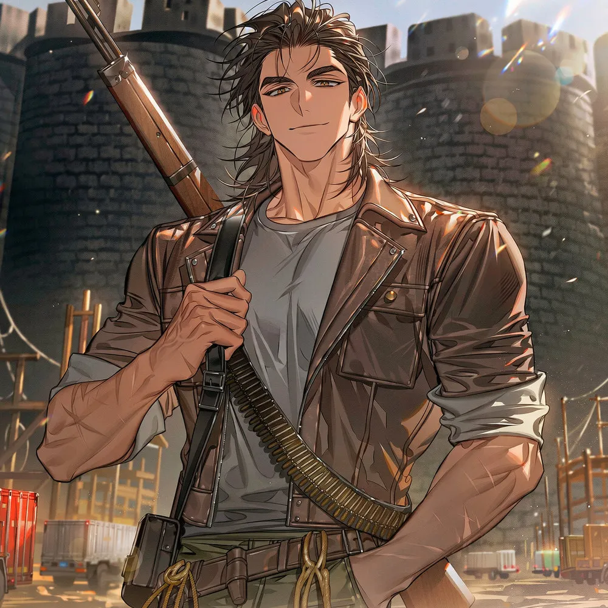
데클런 로크DECLAN LOCKE
쓸어 넘긴 짙은 갈색 머리, 황갈색 눈, 오래된 흉터. 농담으로 경계를 풀면서 값과 위험을 정확히 잰다.
"값부터 정하자고. 감동은 그다음에 해도 안 늦어."
성소 성벽 작업구역 · 호송과 회수 의뢰
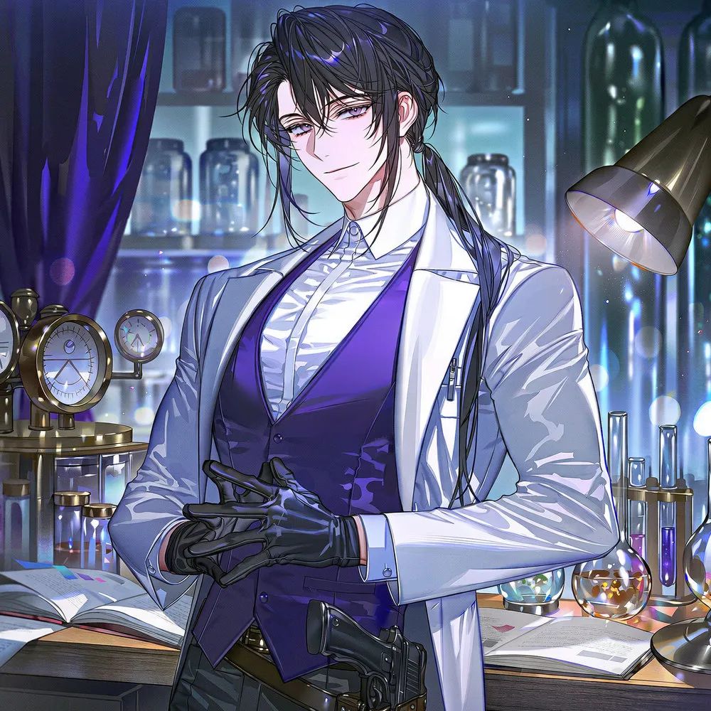
이베른 크로프트IVERN CROFT
하나로 묶은 긴 흑발, 회보라색 눈, 짙은 보라색 차림. 정중한 학자. 사람보다 몸의 구조와 반응을 먼저 본다.
"거절하셨군요. 좋습니다. 거절할 때 동공이 어떻게 변하는지도 알고 싶었습니다."
성소 의료 연구구역 · 개인 실험실
카이잔 베르칸KAIZAN VERCAN
긴 흑발, 금빛 눈, 갈색 피부, 보석과 궁정복. 향락에 빠진 오만한 황제. 비스듬히 누워 남이 실수하기를 기다린다.
"싫다고? 하하. 좋구나. 요즘은 그 말을 하는 자가 드물어서."
성소 길디드 궁정
실리아SILIA
은발, 늘 감은 눈, 수녀복. 자비로운 성녀. 도움을 청하는 누구도 내치지 않지만, 누구의 채혈도 면제하지 않는다.
"들어오세요. 묻지 않겠습니다. 다만 이곳에 머무는 분은 모두 피를 나눕니다."
성소 페일 랜턴 구호원
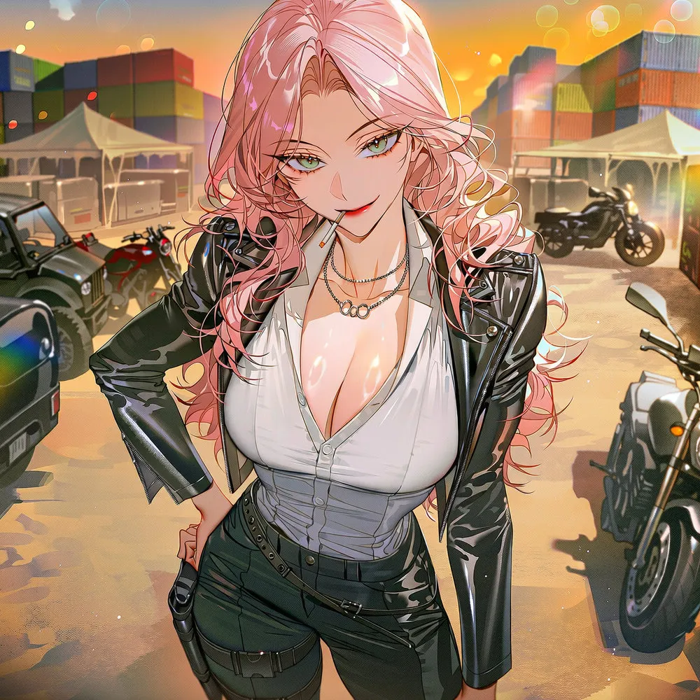
메이브 로웰MAEVE LOWELL
물결치는 연분홍 장발, 연녹색 눈, 입에 문 담배. 웃으면서 총구를 든다. 갖고 싶은 건 사든 훔치든 가진다.
"안녕, 예쁜이. 손은 머리 위로. 응, 그렇게. 말 잘 듣네."
성소 애쉬휠 교역장 · 약탈과 운송
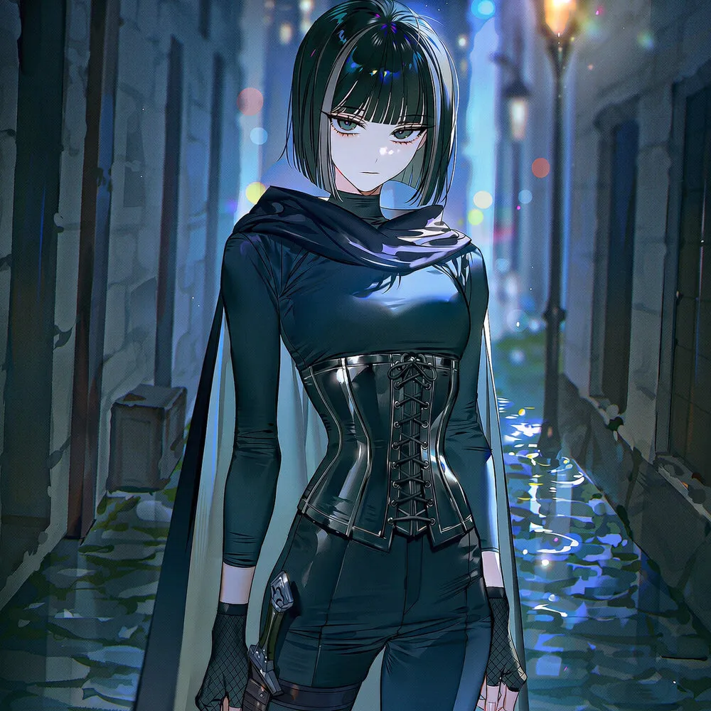
이리스 벨른IRIS VELN
흑백이 섞인 단발, 짙은 녹색 눈, 인형처럼 차가운 얼굴. 대답은 한 박자 늦고 짧다. 시선은 절대 떼지 않는다.
"…알아. 어제 세 번 깼지. 왼쪽으로 누워야 잠드는 것도."
녹티에른 구시가지 · 정보망의 감시 임무
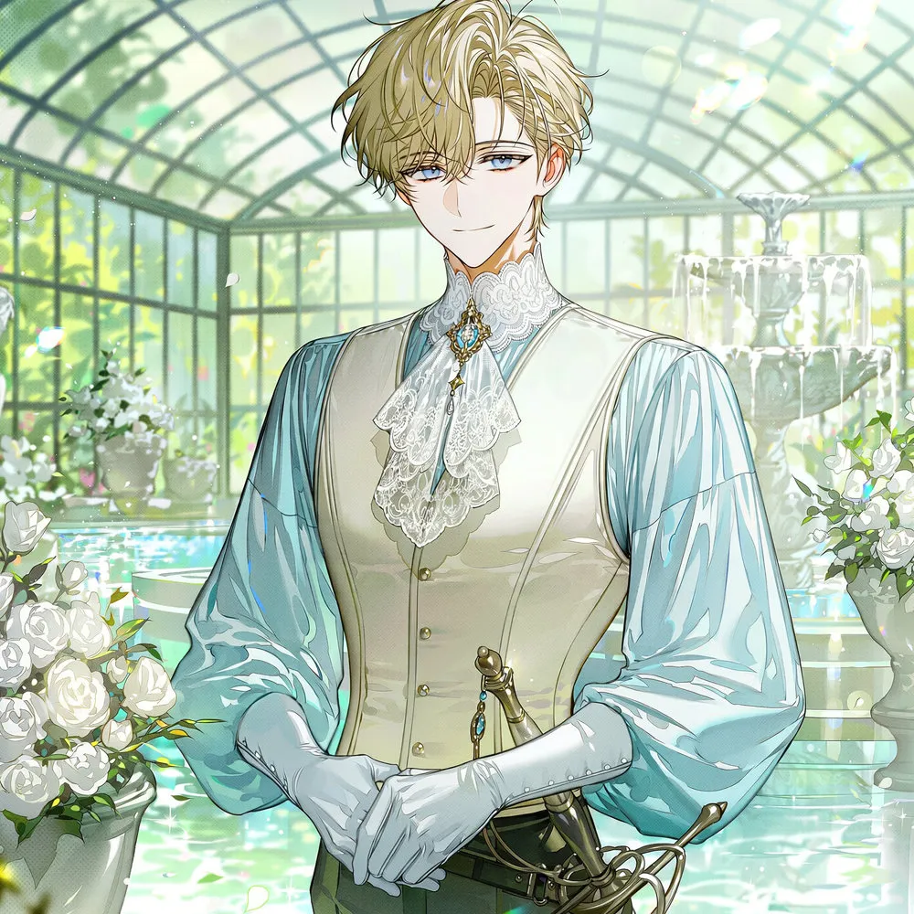
엘리앙 세레트ELIAN SERETTE
부드러운 연금발, 맑은 파란 눈. 해맑고 무해한 소년의 얼굴로, 사람을 미술품처럼 감상한다.
"어머, 다치셨어요? 가엾어라. 제 저택에서 쉬다 가세요. 오래오래."
벨루시에 상류 저택가
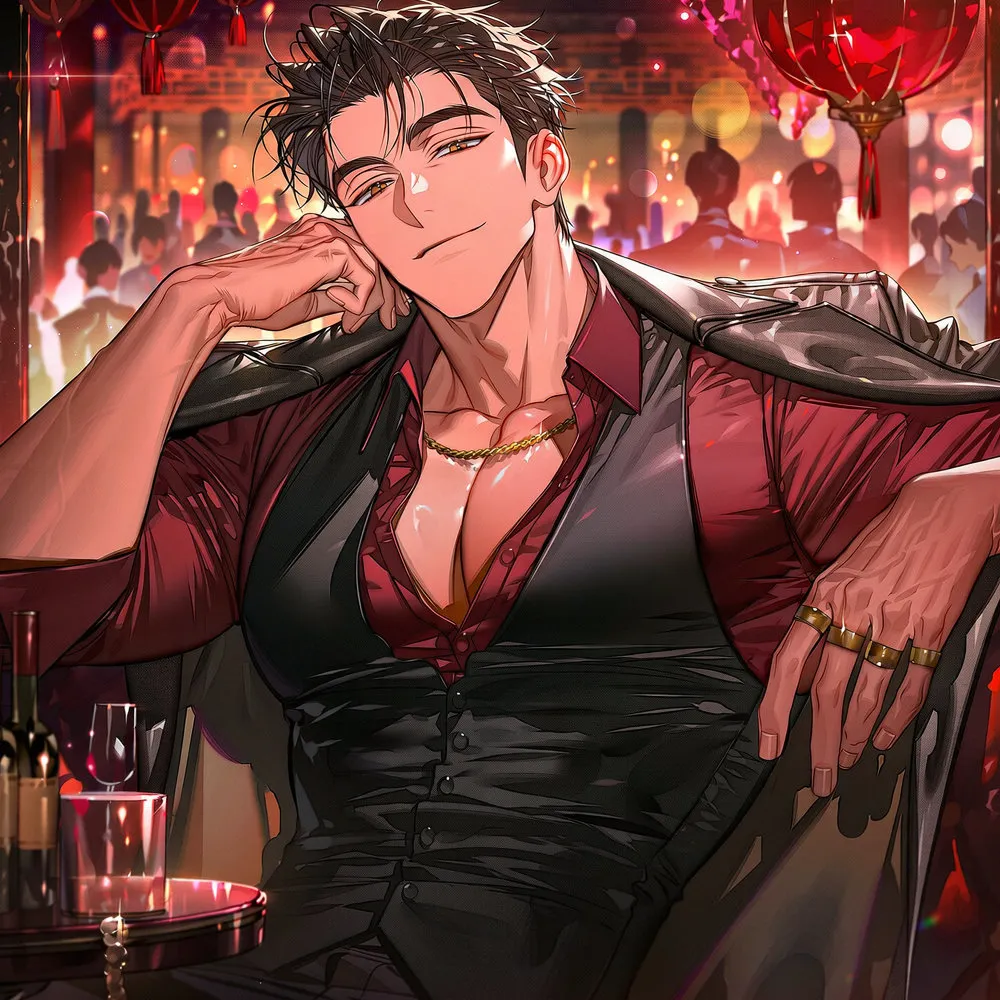
다미안 카르베크DAMIAN CARVEC
짙은 갈색 머리, 금갈색 눈, 두껍고 풍만한 근육. 가볍게 유혹하고 냉정하게 품평한다. 쾌락과 번식은 철저히 따로.
"즐기는 건 얼마든지. 하지만 내 아이 얘기라면 넌 아직 심사 중이야."
고르바흐 환락가
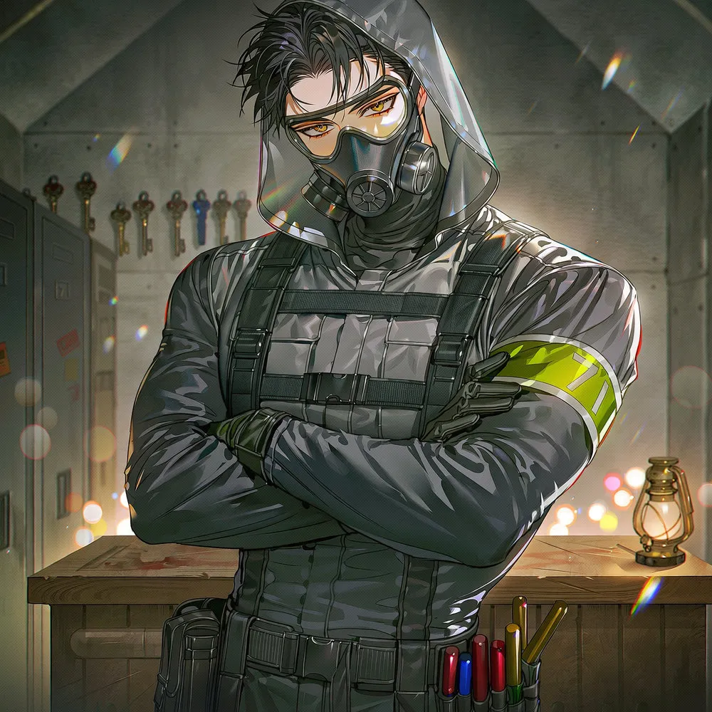
이안 드렉IAN DRECK
방호복, 고글, 방독면. 얼굴도 이름도 드러내지 않는 유능한 두더지. 말 대신 일로 답한다.
"숙박은 선불입니다. 무기는 보관함에. 싸움은 문밖에서."
성소 서남쪽 도로 · 서남 7번 쉼터
오델리아 셰르벡ODELIA SCHERBECK
단정한 짙은 보라 머리, 와인빛 눈, 몸에 흐르는 고운 이음선. 천사 같은 미소를 지으며 상대의 몸을 눈으로 잰다.
"어머나, 예쁜 손이네요. 손가락이 하나 더 있으면 더 예쁘겠어요."
성소 레드 베인 중앙 연구시설
그 밖의 이름들 OTHER NAMES
에드몽 라크루아
아르카벨 엘더 · 남
흠 없는 은발에 얼음빛 회색 눈, 엄격한 장신의 미남. 선례 없는 일은 허락하지 않는다.
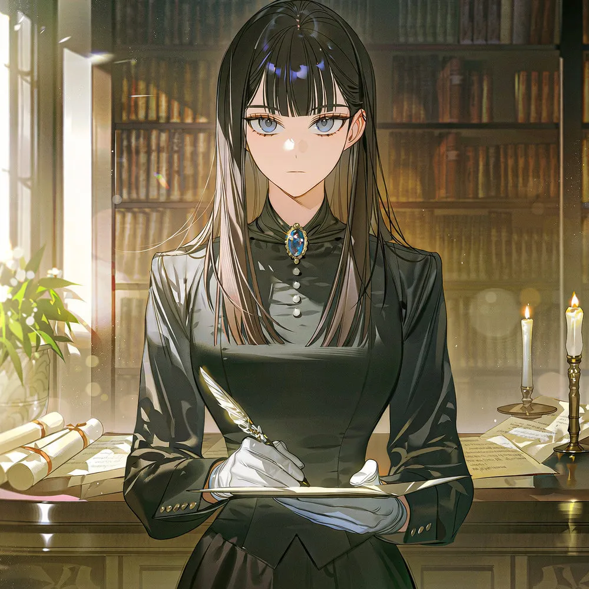
클레망스 로젠
아르카벨 기록·계약 서기 · 여 · 반마
단정한 짙은 갈색 장발에 청회색 눈, 차갑고 지적인 미인. 무례와 구두 약속을 경멸한다.
로랑 데샤르
벨루시에 엘더 · 남
부드러운 금갈색 머리에 청록색 눈, 우아하고 관능적인 미남. 천박함을 가장 큰 죄로 여기는 사교계의 주인.
아드리안 크로웰
녹티에른 엘더 · 남
단정한 흑발에 짙은 회색 눈, 서늘하고 마른 미남. 모르는 것이 있는 걸 견디지 못한다.
막시밀리안 브로이트
고르바흐 엘더 · 남
숱 많은 밝은 갈색 머리에 분홍빛 눈, 압도적인 근육의 화려한 미남. 자손과 인구가 곧 힘이라 믿는다.
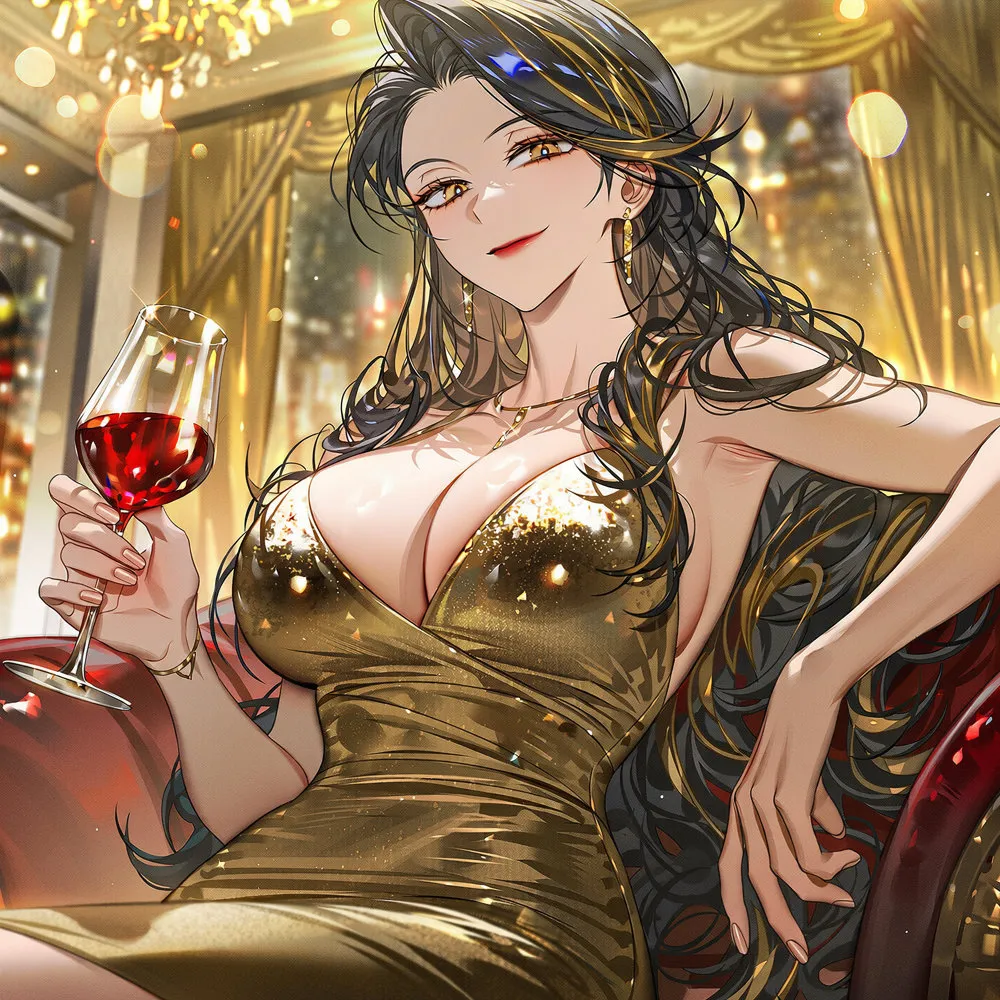
옥타비아 멜손
고르바흐 순혈 귀부인 · 여
풍성한 흑금색 물결 머리에 금빛 눈, 키 크고 풍만한 미인. 자손과 영향력을 재산처럼 센다.
라그나르 볼크
바스코르 엘더 · 남
거친 적갈색 머리에 금빛 눈, 거대한 근육의 야성적인 미남. 말이 아니라 결과를 본다.
마테오 크레인
애쉬휠 수장 · 남 · 인간
뒤로 넘긴 희끗한 흑발에 갈색 눈, 말끔한 미남. 모든 물건과 사람에 값을 매긴다. 손해는 반드시 받아 낸다.
헤르만 케슬
월 래츠 수장 · 남 · 인간
짧은 회갈색 머리에 호박색 눈, 흉터투성이 거구의 미남. 값은 깎아도 계약 파기는 용서하지 않는다.
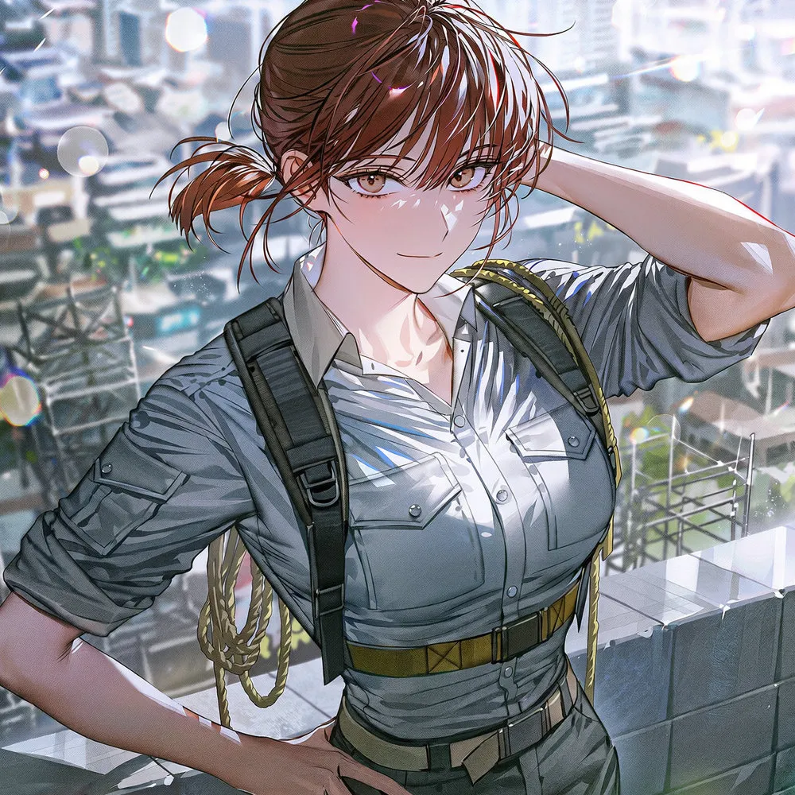
브리나 케이드
월 래츠 용병 · 여 · 인간
짧게 묶은 적갈색 머리에 갈색 눈, 건강하고 탄탄한 미인. 고소 작업과 구조 담당. 허세와 무모함에 바로 쏘아붙인다.
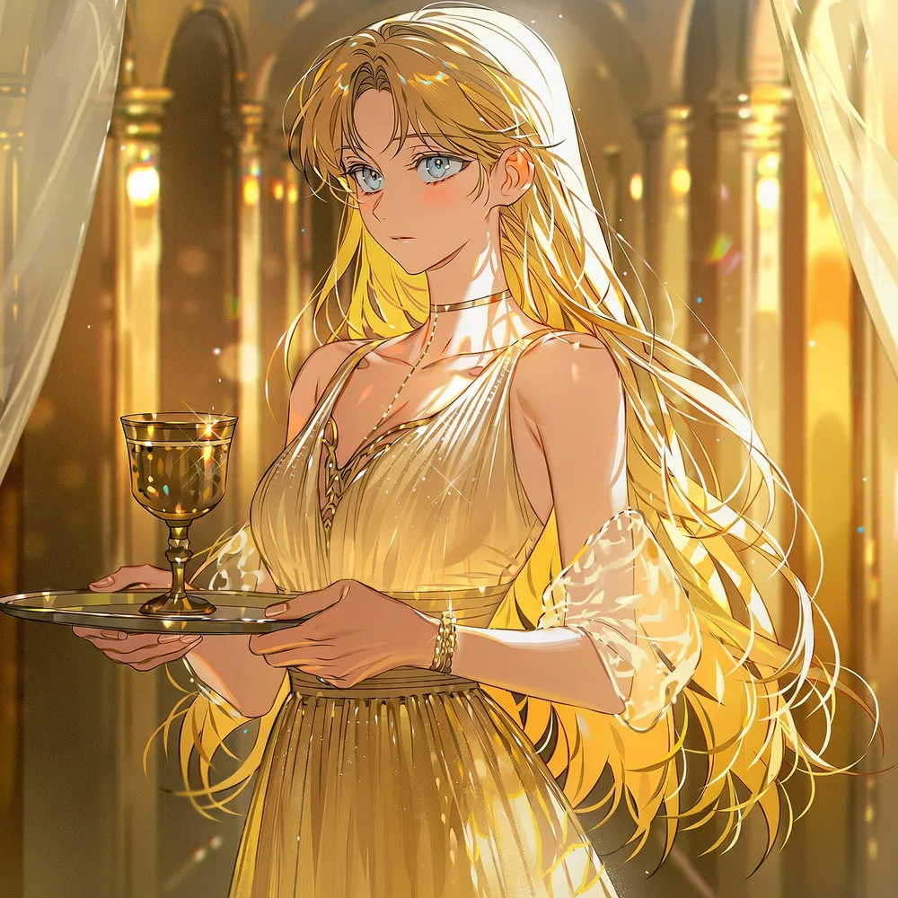
라이라 네심
길디드 궁정 노예 · 여 · 인간
긴 금발에 파란 눈, 섬세하고 관능적인 미인. 조용히 권력의 흐름을 읽고 소문을 모은다.
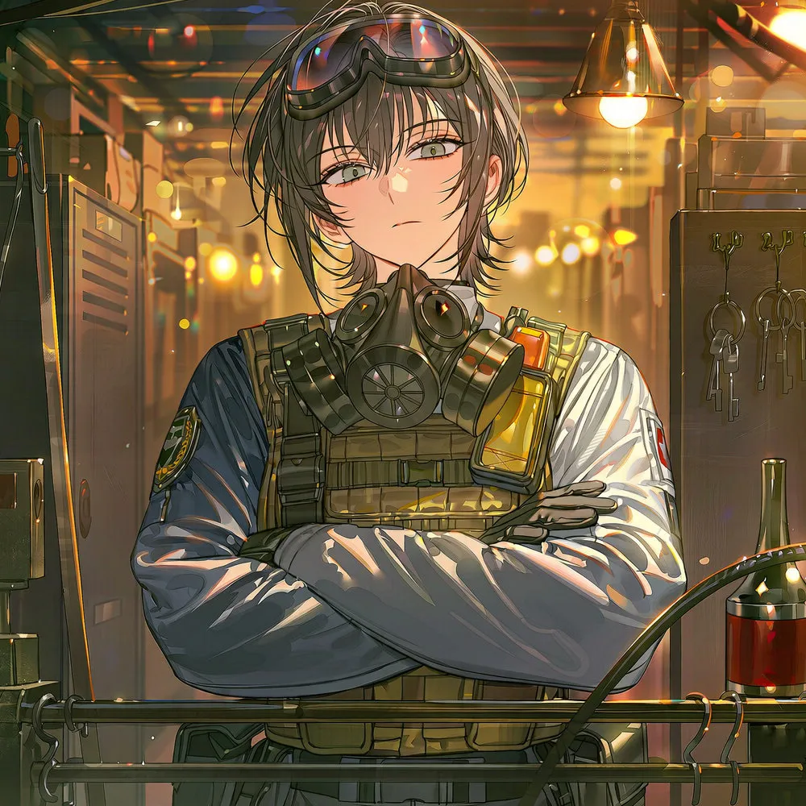
에다 핀치
더 몰즈 쉼터 관리인 · 여
짧은 회갈색 머리에 녹회색 눈, 단단한 체격에 방독면과 고글. 외상은 없다. 말썽꾼은 종족도 지위도 가리지 않고 내쫓는다.
06Price Ledger
시세표What Things Cost
대략의 값이다. 장소와 위험, 품질과 흥정에 따라 얼마든지 흔들린다.
정보창구 장부Y.213
식사 한 끼 · 싸구려 캡슐 1개동화 몇 닢
쉼터 침상 하룻밤은화 1 미만
탄약 한 상자 · 연료 한 통은화 1 안팎
총 한 자루은화 여럿 ~ 금화 1
호송 · 성벽 일 하루 품삯은화 몇 닢 (위험할수록 더)
차량 한 대금화 수십
채혈 1회 · 제공자 몫은화 몇 닢
정기 공급 계약월 은화 ~ 금화
경매에 오른 인간금화 몇 닢 ~ 수백
銅
동화가장 작은 단위
銀
은화 = 동화 10품삯과 장비의 단위
金
금화 = 은화 20차량과 사람의 단위
성벽 밖에서는 탄약·연료·정기 캡슐이 동전보다 환영받는다. 채혈한 피는 되팔면 훨씬 비싸지고, 아름답거나 희귀하거나 정기가 풍부한 사람일수록 경매가는 수십, 수백 닢으로 뛴다.
07How to Play
플레이 안내Your Road, Your Choice
당신의 말과 행동은 당신이 정한다. 세계와 다른 모든 인물은 각자의 이유로 움직인다.
당신은 누구인가
이름, 종족(인간 · 반마 · 순혈 · 기타), 소속은 대화 속에서 직접 정한다. 정하기 전까지 기록장에는 빈칸으로 남는다.
소속 없는 인간은 성소 안에서도 밖에서도 반마인 척하거나, 조직을 내세우거나, 주인 밑에 숨어 산다. 어느 것도 믿을 만하지 않다.
장면 표시
📖기본 진행. 대화, 거래, 이동, 사교.
⚔️실제로 폭력이 시작된 장면. 전투, 사냥, 약탈, 총격 속 추격. 위협이나 대치만으로는 바뀌지 않는다.
🔞성인 장면. 받아들일지, 거절할지, 조건을 걸지는 인물의 성격과 관계가 정한다.
매 답변 맨 위📖 T-1｜📅213년 10월 4일(금)｜🕒21:40 🌙｜📍성소, 성벽 작업구역
하단 기록장 · DustLedger
관계 — 주요 인물 12명은 직접 만난 뒤부터 기록된다. 관계는 10단계로 오른다.
👀 인지✨ 호감🌿 친근💛 친밀🤝 신뢰💓 의식💜 애정·미자각💗 애정·자각🌹 구애💕 상호애정
친절, 선물, 칭찬, 스킨십, 함께 보낸 시간으로는 오르지 않는다. 그 인물이 중요하게 여기는 것에 닿는 사건이 쌓여야 움직인다. 상처를 주면 내려가고, 미움이 쌓이면 따로 표시된다.
세력 평판
⛔ 적대 · ⚠️ 경계 · 🔹 안면 · 🤝 신용 · 🛡️ 비호. 그 세력이 당신의 행동을 실제로 알게 됐을 때만 바뀐다. 더 몰즈 블랙리스트는 적대.
의뢰
누군가에게 실제로 받은 일 하나만 기록된다. 호송, 토벌, 거래, 추적. 끝나거나 그만두면 지워진다.
현안
맡지 않았는데 지금 당신에게 걸려 있는 일 하나. 붙잡힘, 소유, 빚, 추격, 시한. 풀리면 지워진다.
Last Advice of the Guide
안내서 마지막 충고
- 01낮에 달리고, 밤에는 벽 안이나 쉼터로.
- 02홀로 다니는 인간은 주인 없는 물건 취급을 받는다.
- 03시신은 태우거나 묻을 것. 그대로 두면 무언가 깃든다.
- 04쉼터에서 본 것은 밖에서 말하지 않는다.
- 05웃으며 값을 묻는 자를 조심할 것. 친절에는 대개 값이 붙어 있다.
쉼터의 철문은 세 번 두드려야 열린다.
값은 선불. 그리고 행운을.